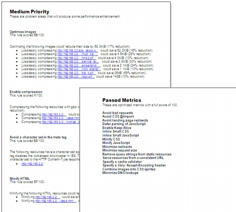

Webpage Performance Report (RTF Format) The Webpage Performance report, meant for web developers, leverages Google’s PageSpeed Analytics to quickly identify potential performance issues with web pages, such as too many images or not specifying a character set in HTTP headers. The report lists potential problem areas based on rule scores. Scoring is based on the number of URLs that violate a rule: 100/100 means no violations, 0/100 means excessive violations. Rules are categorized by priority (High, Medium, Low) based on the number of the violations (URLs) and the weighted rules themselves. For example, consider the case where two webpages violate the “Leverage browser caching” rule. For one webpage, the rule is categorized under High priority because there are 20 violations. For the other webpage, the same rule is categorized under Medium priority because there are only 10 violations. In another case, a rule with a higher importance may be categorized under High priority with only a few violations. (A priority level is omitted from the report if no violations are found in that category.) Additionally, the report lists common issues that passed an applied set of rules. Note—The report assumes that the HTTP traffic in the model is from a single HTTP page. The report can be generated for models containing HTTP traffic by performing one of the following options: • Choose Reports > Generate Webpage Performance Report… • From the AppDoctor HTTP tab, choose “Generate Webpage Performance Report…” The following figure shows example pages from the Webpage Performance Report. The first page (with the heading “Medium Priority”) lists potential performance issues. For each issue, the report lists the rule score, a brief description of the rule, and hyperlinks to easily find the issues in the webpage. The second page (with the heading “Passed Metrics”) lists the common issues that passed an applied set of rules. Figure 23-6 Webpage Performance Report: Example Pages 